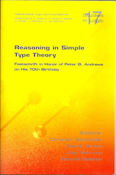
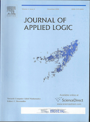
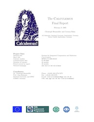
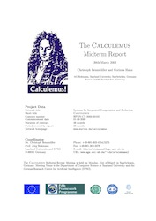
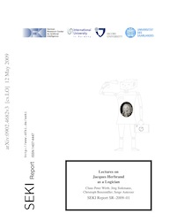

List of all Publications
Ask also: DBLP, Faceted DPLB,
Google Scholar. My Erdös number is
3.
Here is also a latex-pdf-version of my list of
publications.
-
-
* Please notice and obey existing copyrights before
downloading files
    
International Journals
-
[J27] C. Benzmüller and A.
Pease, Higher-Order Aspects and Context in SUMO.
Web Semantics: Science, Services and Agents on the World
Wide Web (Special issue on Reasoning with context in the
Semantic Web), (2012) 12-13:104-117. ISSN
1570-8268 © Elsevier [Download:
bib,pdf,doi:10.1016/j.websem.2011.11.008]
-
[J26] C. Benzmüller, D. Gabbay, V. Genovese,
and D. Rispoli, Embedding and automating conditional
logics in classical higher-order logic. Annals of
Mathematics and Artificial Intelligence, (2012)
66(1-4):257-271
. ISSN 1012-2443 © Springer. [Download:
bib,pdf,doi:10.1007/s10472-012-9320-z]
See also http://arxiv.org/abs/1106.3685
-
[J25] C. Benzmüller, Combining and Automating
Classical and Non-Classical Logics in Classical Higher-Order
Logics. Annals of Mathematics and
Artificial Intelligence (Special issue Computational logics in
Multi-agent Systems (CLIMA XI)), (2011)
62(1-2):103-128. ISSN 1012-2443 ©
Springer. [Download: bib,pdf,doi:10.1007/s10472-011-9249-7]
-
[J24] A. Pease and C. Benzmüller, Sigma: An
Integrated Development Environment for Formal Ontology.
AI Communications (Special Issue on Intelligent Engineering
Techniques for Knowledge Bases), (2013) 26(1):79-97. ISSN
0921-7126. © IOS Press. [Download:
bib,pdf,doi:10.3233/AIC-120549]
-
[J23] C. Benzmüller and L. C. Paulson, Quantified
Multimodal Logics in Simple Type Theory. Logica
Universalis (Special Issue on Multimodal Logics),
(2013) 7(1):7-20. ISSN 1661-8297 ©
Springer. [Download: bib,pdf,doi:10.1007/s11787-012-0052-y]
See also http://arxiv.org/abs/0905.2435
-
[J22] G. Sutcliffe and C. Benzmüller,
Automated Reasoning in Higher-Order Logic using the TPTP THF
Infrastructure. Journal of Formalized
Reasoning, (2010) 3(1):1-27. ISSN 1972-5787. [Download: bib,pdf,url]
-
[J21] C. Benzmüller and L. C. Paulson,
Multimodal and Intuitionistic Logics in Simple Type Theory.
The Logic Journal of the IGPL, (2010)
18(6): 881-892. © Oxford University
Press. ISSN 1367-0751. [Download: bib,pdf,doi:10.1093/jigpal/jzp080]
-
[J20] S. Autexier and C. Benzmüller, Preface: Proceedings
of the 8th Workshop on User Interfaces for Theorem Provers (UITP
2008). Electronic Notes in Theoretical
Computer Science, (2009) 226:1-2. © Elsevier. ISSN
1571-0661 (non-reviewed editorial) [Download: bib,pdf,doi:10.1016/j.entcs.2008.12.093]
-
[J19] M. Schiller, D. Dietrich, and C. Benzmüller,
Proof Step Analysis for Proof Tutoring – A Learning
Approach to Granularity, Teaching Mathematics
and Computer Science, (2008) 6(2):325-343. ISSN 1589-7389.
[Download: bib,pdf,url]
-
[J18] C. Benzmüller, C. E. Brown, and M. Kohlhase,
Cut-Simulation and Impredicativity, Logical
Methods in Computer Science, (2009) 5(1:6):1-21. ISSN
1860-5974. [Download: bib,pdf,doi:10.2168/LMCS-5(1:6)2009]
-
[J17] S. Autexier, C. Benzmüller, D. Dietrich, and M. Wagner,
Organisation, Transformation, and Propagation of
Mathematical Knowledge in Omega, Mathematics in
Computer Science, (2008) 2(2):253-277. ©
Birkhäuser. ISSN 1661-8270 [Download:
bib,pdf,doi:10.1007/s11786-008-0054-6]
-
[J16] C. Benzmüller, V. Sorge, M. Jamnik, and M. Kerber,
Combined Reasoning by Automated Cooperation. Journal of Applied Logic, (2008) 6(3):318-342. ©
Elsevier. ISSN 1570-8683 [Download: bib,pdf,doi:10.1016/j.jal.2007.06.003]
-
[J15] S. Autexier, and C. Benzmüller, Preface: Proceedings
of the 7th Workshop on User Interfaces for Theorem Provers (UITP
2006). Electronic Notes in Theoretical
Computer Science, (2007) 174(2):1-2. © Elsevier. ISSN
1571-0661 (non-reviewed editorial) [Download: bib,pdf,doi:10.1016/j.entcs.2006.09.017]
-
[J14] M. Wagner, S. Autexier, and C. Benzmüller, PLATO: A
Mediator between Text-Editors and Proof Assistance Systems.
Electronic Notes in Theoretical Computer
Science, (2007) 174(2):87-107. © Elsevier. ISSN
1571-0661 [Download: bib,pdf,doi:10.1016/j.entcs.2006.09.024]
-
[J13] C. Benzmüller, Towards Computer Aided
Mathematics. Special Issue on Assistance Systems
for Mathematics, Journal of Applied
Logic. (2006) 4(4):359-365. © Elsevier. ISSN 1570-8683
(non-reviewed editorial) [Download: bib,pdf,doi:10.1016/j.jal.2005.10.001]
-
[J12] J. Siekmann, C. Benzmüller, and S. Autexier,
Computer Supported Mathematics with OMEGA. Special Issue on
Mathematics Assistance Systems, Journal of Applied
Logic. (2006) 4(4):533-559. © Elsevier. ISSN 1570-8683
[Download: bib,pdf,doi:10.1016/j.jal.2005.10.001]
-
[J11] M. Buckley and C. Benzmüller, System Description: A
Dialog Manager supporting Tutorial Natural Language Dialogue on
Proofs. Electronic Notes in Theoretical
Computer Science. © Elsevier. To appear, 2007. ISSN
1571-0661 [Download: bib,pdf,url]
-
[J10] S. Autexier, C. Benzmüller, A. Fiedler, H. Lesourd,
Integrating Proof Assistants as Reasoning and Verification
Tools into a Scientific WYSIWYG Editor. Electronic
Notes in Theoretical Computer Science. © Elsevier. To
appear, 2007. ISSN 1571-0661 [Download:
bib,pdf,url]
-
[J9] M. Hübner, C. Benzmüller, S. Autexier, A. Meier,
Interactive Theorem Proving with Tasks. Electronic
Notes in Theoretical Computer Science, (2004) 103(C):161-181.
© Elsevier. ISSN 1571-0661 [Download: bib,pdf,doi:10.1016/j.entcs.2004.02.021]
-
[J8] S. Autexier, C. Benzmüller, A. Fiedler, H. Horacek, and
B. Q. Vo, Assertion-level Proof Representation with
Under-Specification. Electronic Notes in
Theoretical Computer Science, (2004) 93:5-23. ©
Elsevier. ISSN 1571-0661 [Download: bib,pdf,doi:10.1016/j.entcs.2003.12.026]
-
[J7] M. Jamnik, M. Kerber, M. Pollet, and C.
Benzmüller, Automatic Learning of Proof Methods in Proof
Planning. The Logic Journal of the IGPL, (2003)
11(6):647-674. © Oxford University Press. ISSN
1367-0751. [Download: bib,pdf,doi:10.1093/jigpal/11.6.647]
-
[J6] C. Benzmüller, C. E. Brown, and M. Kohlhase,
Higher Order Semantics and Extensionality. Journal
of Symbolic Logic. (2004) 69(4):1027-1088. ©
JSTOR. ISSN 0022-4812. [Download: bib,pdf,doi:10.2178/jsl/1102022211]
-
[J5] C. Benzmüller, Comparing Approaches to
Resolution based Higher-Order Theorem Proving. Synthese,
(2002) 133(1-2):203-235. © Springer. ISSN: 0039-7857
[Download: bib,pdf,doi:10.1023/A:1020840027781]
-
[J4] C. Benzmüller, M. Jamnik, M. Kerber, and V.
Sorge, Agent-based Mathematical Reasoning. Electronic
Notes in Theoretical Computer Science, (1999) 23(3). (12
pages). © Elsevier. ISSN 1571-0661 [Download:
bib,pdf,doi:10.1016/S1571-0661(05)82522-8]
-
[J3] J. Siekmann, H. Horacek, M. Kohlhase, C.
Benzmüller, L. Cheikhrouhou, D. Fehrer, A. Fiedler, S. Hess,
K. Konrad, A. Meier, E. Melis, and V. Sorge, An Interactive
Proof Development Environment + Anticipation = A Mathematical
Assistant? International Journal of
Computing Anticipatory Systems (CASYS), (1999)
3:101-110. © CHAOS. [Download: bib,pdf]
-
[J2] J. Siekmann, S. Hess, C. Benzmüller, L.
Cheikhrouhou, A. Fiedler, H. Horacek, M. Kohlhase, K. Konrad, A.
Meier, E. Melis, M. Pollet, and V. Sorge, LOUI: Lovely Omega
User Interface. Formal Aspects of
Computing, (1999) 11:326–342. © Springer.
ISSN 0934-5043 [Download: bib,pdf,doi:10.1016/S1571-0661(05)82522-8]
-
[J1] C. Benzmüller, M. Bishop, and V. Sorge,
Integrating TPS and OMEGA. Journal
of Universal Computer Science, (1999) 5(3):188-207. ©
Springer. ISSN 0948-6968 [Download: bib,pdf,doi:10.3217/jucs-005-03-0188]
Chapters in Books and Invited Contributions
-
[B13] A. Pease and C. Benzmüller, Knowledge
Engineering Tools. Chapter in A. Pease, Ontology: A
Practical Guide, 2011. Articulate Software Press,
Angwin, CA, USA. ISBN: 978-1-889455-10-5 [Download:
bib,url]
-
[B12] C. Benzmüller, Verifying the Modal Logic Cube
is an Easy Task (for Higher-Order Automated Reasoners).
In S. Siegler and N. Wasser (eds.), Verification, Induction,
Termination Analysis - Festschrift for Christoph Walther on the
Occasion of His 60th Birthday. LNCS vol. 6463, pp.
117-128, 2010. © Springer. ISBN: 978-3-642-17171-0 [Download: bib,pdf,doi:10.1007/978-3-642-17172-7]
-
[B11] C. Benzmüller, M. Schiller, and J. Siekmann,
Resource-Bounded Modelling and Analysis of Human-Level
Interactive Proofs. In M.W. Crocker and J. Siekmann
(eds.), Resource-Adaptive Cognitive Processes, pp. 294-314.
Cognitive Technologies Series. 2010. © Springer. ISBN:
978-3-540-89407-0 [Download: bib,pdf,doi:10.1007/978-3-540-89408-7_13]
-
[B10] S. Autexier, C. Benzmüller, and J. Siekmann,
OMEGA: Resource-Adaptive Processes in an Automated
Reasoning System. In M.W. Crocker and J. Siekmann (eds.),
Resource-Adaptive Cognitive Processes, pp. 389-420. Cognitive
Technologies Series. 2010. © Springer. ISBN:
978-3-540-89407-0 [Download: bib,pdf,doi:10.1007/978-3-540-89408-7_17]
-
[B9] C. Benzmüller and L. C. Paulson, Exploring
Properties of Normal Multimodal Logics in Simple Type Theory with
LEO-II. In C. Benzmüller, C. E. Brown, J. Siekmann
and R. Statman (eds.), Festschrift in Honor of Peter B. Andrews on
His 70th Birthday. Studies in Logic, Mathematical Logic and
Foundations. 2008. © College Publications. ISBN
978-1-904987-70-3 [Download: bib,pdf,url]
-
[B8] C. Benzmüller, C. E. Brown, and M. Kohlhase, Cut
Elimination with Xi-Functionality. In C.
Benzmüller, C. E. Brown, J. Siekmann and R. Statman (eds.),
Festschrift in Honor of Peter B. Andrews on His 70th Birthday.
Studies in Logic, Mathematical Logic and Foundations. 2008.
© College Publications. ISBN 978-1-904987-70-3 [Download:
bib,pdf,url]
-
[B7] C. Benzmüller, H. Horacek, I. Kruijff-Korbayova, M.
Pinkal, J. Siekmann, and M. Wolska, Natural Language Dialog
with a Tutor System for Mathematical Proofs. In R. Lu and J.
Siekmann and C. Ullrich, Cognitive Systems, LNAI vol.
4429, pp.1-14, Shanghai, China, 2007. © Springer. ISBN:
978-3-540-70933-6 [Download: bib,pdf,doi:10.1007/978-3-540-70934-3_1]
-
[B6] C. Benzmüller and C. E. Brown, The Curious
Inference of Boolos in MIZAR and OMEGA. In Roman
Matuszewski, Anna Zalewska (eds.), From Insight to Proof –
Festschrift in Honour of Andrzej Trybulec. Studies in Logic,
Grammar, and Rhetoric, 10(23):299-388, 2007. ISBN
978-83-7431-128-1 [Download: bib,pdf,url]
-
[B5] C. Benzmüller and C. E. Brown, Automation
of Higher-Order Logics. Unpublished Draft.
-
[B4] C.P. Wirth, J. Siekmann, C. Benzmüller, and S. Autexier,
Jacques Herbrand: Life, Logic, and Automated
Deduction. In D. Gabbay, J. Woods (eds.), The
Handbook of the History of Logic, Volume 5 – Logic and Sets
from Russell to Church: Logic. 2009. © Elsevier. Invited
Chapter. ISBN 978-0-08-088547-6 [Download: bib,doi:10.1016/S1874-5857(09)70009-3]
-
[B3] C. Benzmüller, A. Fiedler, A. Meier, M.
Pollet, and J. Siekmann, OMEGA. In F.
Wiedijk (ed.), The seventeen provers of the world, LNAI,
vol. 3600, pp. 127-141, 2006. © Springer. ISBN
978-3-540-30704-4 [Download: bib,pdf,doi:10.1016/S1874-5857(09)70009-3]
-
[B2] C. Benzmüller, A. Meier, and V. Sorge,
Bridging Theorem Proving and Mathematical Knowledge
Retrieval. In D. Hutter, W. Stephan (eds.),
Mechanizing Mathematical Reasoning: Essays in Honor of Jörg
H. Siekmann on the Occasion of His 60th Birthday, LNAI
vol. 2605, pp. 277-296, Saarbrücken, 2004. ©
Springer. ISBN 3-540-25051-4. [Download: bib,pdf,doi:10.1007/978-3-540-32254-2_17]
-
[B1] J. Siekmann, C. Benzmüller, A. Fiedler, A. Meier, I.
Normann, and M. Pollet, Proof Development in OMEGA – The
Irrationality of Square Root of 2. In Fairouz Kamareddine
(ed.), Thirty Five Years of Automating Mathematics, Applied
Logic Series, Volume 28, pp. 271-314. © Kluwer Academic
Publishers. July 2003. ISBN: 978-1-4020-1656-1 [Download:
bib,pdf,url]
Edited Books, Journals, and Proceedings
-
[E12] S. Autexier and C. Benzmüller (editors), User
Interfaces for Theorem Provers. Proceedings of UITP'08,
Montreal, Canada, 2008. [Download: bib,pdf,url]
-
[E11] C. Benzmüller, C. E. Brown, J. Siekmann, and R.
Statman, Festschrift in Honor of Peter B. Andrews on His
70th Birthday. Studies in Logic, Mathematical Logic and
Foundations. 2008. © College Publications. ISBN
978-1-904987-70-3 [Download: bib,url]
-
[E10] C. Benzmüller, B. Fischer, and G. Sutcliff,
Proceedings of the 6th International Workshop on the
Implementation of Logics. Phnom Penh, Cambodia, November 2006.
CEUR volume 212. [Download: bib,pdf,url]
-
[E9] S. Autexier and C. Benzmüller (editors), User
Interfaces for Theorem Provers, Proceedings of UITP'06.
Electronic Notes in Theoretical Computer Science,
(2007) 174(2). © Elsevier. [Download: bib,pdf,doi:10.1016/j.entcs.2006.09.017]
-
[E8] C. Benzmüller, J. Harrison, C. Schürmann (editors),
Proceedings of the LPAR-05 Workshop: Empirically Successfull
Automated Reasoning in Higher-Order Logic (ESHOL). Wexford
Hotel, Montego Bay, Jamaica, 2005. [Download: bib,pdf,url]
-
[E7] C. Benzmüller (editor), Towards Computer Aided
Mathematics. Special Issue in the Journal of Applied
Logic. 2006 4(4). © Elsevier. ISSN 1570-8683 [Download: bib,pdf,url]
-
[E6] C. Benzmüller and W. Windsteiger (editors),
Computer-Supported Mathematical Theory
Development. Proceedings of the IJCAR 2004 Workshop 7. Cork,
Ireland, July 05, 2004. No. 04-14 RISC Report Series (ISBN
3-902276-04-5), RISC Institute, University of Linz, Austria. (108
pages) [Download: bib,pdf]
-
[E5] C. Benzmüller (editor), Systems for
Integrated Computation and Deduction – Interim Report of the
Calculemus IHP Network. Seki-Report
SR-03-05 (ISSN 1437-4447), Saarland University, 2003. (135
pages) [Download: bib,
pdf]
-
[E4] C. Benzmüller and R. Endsuleit (editors),
CALCULEMUS Autumn School 2002: Course Notes (Part
III). Seki-Report SR-02-09 (ISSN
1437-4447), Saarland University, 2002. (121 pages) [Download: bib,pdf]
-
[E3] C. Benzmüller and R. Endsuleit (editors),
CALCULEMUS Autumn School 2002: Course Notes (Part II).
Seki-Report SR-02-08 (ISSN 1437-4447),
Saarland University, 2002. (130 pages) [Download:
bib,pdf]
-
[E2] C. Benzmüller and R. Endsuleit (editors),
CALCULEMUS Autumn School 2002: Course Notes (Part I).
Seki-Report SR-02-07 (ISSN 1437-4447),
Saarland University, 2002. (168 pages) [Download:
bib,pdf]
-
[E1] J. Zimmer and C. Benzmüller (editors),
CALCULEMUS Autumn School 2002: Student Poster Abstracts.
Seki-Report SR-02-06 (ISSN 1437-4447), Saarland University, 2002.
(116 pages) [Download: bib,pdf]
International Conferences
-
[C37] C. Benzmüller, Automating
Quantified Conditional Logics in HOL,
The 23rd International Joint Conference on Artificial Intelligence
(IJCAI 2013), Beijing, China, 2013. [Download: bib,pdf,doi:]
-
[C36] C. Benzmüller, HOL based
Universal Reasoning, Handbook of the 4th
World Congress and School on Universal Logic (UNILOG 2013), Rio de
Janeiro, Brazil, 2013. ISBN 978-85-400-0682-9 [Download:
bib,pdf,doi:]
-
[C35] C. Benzmüller, A Top-down
Approach to Combining Logics, The 5th
International Conference on Agents and Artificial Intelligence
(ICAART 2013), Barcelona, Spain, 2013. [Download: bib,pdf,doi: ]
-
[C34] C. Benzmüller, J. Otten and Th. Raths,
Implementing and Evaluating Provers for First-order Modal
Logics, 20th European Conference on
Artificial Intelligence (ECAI'2012), Montpellier, France, 2012.
[Download: bib,pdf,doi:10.3233/978-1-61499-098-7-163]
-
[C33] C. Benzmüller and V. Genovese, Quantified
Conditional Logics are Fragments of HOL, The
International Conference on Non-classical Modal and Predicate
Logics (NCMPL), Guangzhou (Canton), China, 2011. [Download:
bib,pdf]
This unpublished paper is available from http://arxiv.org/abs/1204.5920
-
[C32] C. Benzmüller, Simple Type Theory as Framework
for Combining Logics. Contest paper at the 3rd
World Congress and School on Universal Logic
(UNILOG 2010), Lisbon, Portugal, 2010. [Download:
bib,pdf]
This unpublished paper is available from http://arxiv.org/abs/1004.5500.
-
[C31] M. Schiller and C.
Benzmüller, Presenting
Proofs with Adapted Granularity. KI 2009: Advances in
Artificial Intelligence, 32nd Annual German Conference on AI,
Paderborn, Germany, September 15-18, Proceedings, LNAI
vol. 5803, pp. 289-297, 2009. © Springer. ISBN
978-3-642-04616-2 [Download: bib,pdf,doi:10.1007/978-3-642-04617-9_37]
-
[C30] M. Schiller and C.
Benzmüller, Granularity-Adaptive
Proof Presentation. Artificial Intelligence in
Education: Building Learning Systems that Care: From Knowledge
Representation to Affective Modelling, Proceedings of the 14th
International Conference on Artificial Intelligence in Education,
AIED 2009, July 6-10, 2009, Brighton, UK, Frontiers in Artificial
Intelligence and Applications vol. 200, pp. 599-601, 2009.
© IOS Press. ISBN 978-1-60750-028-5, [Download:
bib,pdf]
Extended version available from http://arxiv.org/abs/0903.0314
-
[C29] G. Sutcliffe, C. Benzmüller, C.E. Brown,
and F. Theiss, Progress in the Development of Automated Theorem
Proving for Higher-order Logic. Automated
Deduction - CADE-22, 22nd International Conference on Automated
Deduction, Montreal, Canada, August 2-7, 2009, Proceedings, LNAI vol. 5663, pp. 116-130, 2009. ©
Springer. ISBN 978-3-642-02958-5 [Download:
bib,pdf,doi:10.1007/978-3-642-02959-2_8]
-
[C28] M. Schiller and C.
Benzmüller, Proof
Granularity as an Empirical Problem? CSEDU 2009 -
Proceedings of the First International Conference on Computer
Supported Education, Lisboa, Portugal, March 23-26, 2009 - Volume
1, pp. 350-354, 2009, © INSTICC Press. ISBN
978-989-8111-82-1 [Download: bib,pdf]
-
[C27] C.
Benzmüller, Automating
Access Control Logic in Simple Type Theory via LEO-II.
Emerging Challenges for Security, Privacy and Trust, 24th IFIP TC
11 International Information Security Conference, SEC 2009, Pafos,
Cyprus, May 18-20, 2009, Proceedings, IFIP vol. 297, pp. 387-398,
2009. © Springer. ISBN 978-3-642-01243-3, [Download:
bib,pdf,doi:10.1007/978-3-642-01244-0_34]
-
[C26] C. Benzmüller, L. C. Paulson, F. Theiss, and A.
Fietzke, LEO-II - A Cooperative Automatic Theorem Prover for
Higher-Order Logic. Fourth International Joint Conference on
Automated Reasoning (IJCAR'08), LNAI vol. 5195, pp.
162-170, Sydney, Australia, 2008. © Springer. ISBN
978-3-540-71069-1 [Download: bib,pdf,doi:10.1007/978-3-540-71070-7_14]
-
[C25] C. Benzmüller, F. Rabe, and G. Sutcliffe, The Core
TPTP Language for Classical Higher-Order Logic. Fourth
International Joint Conference on Automated Reasoning (IJCAR'08),
LNAI vol. 5195, pp. 491-506, Sydney, Australia, 2008.
© Springer. ISBN 978-3-540-71069-1 [Download:
bib,pdf,doi:10.1007/978-3-540-71070-7_41]
-
[C24] C. Benzmüller, D. Dietrich, M. Schiller, and Serge
Autexier, Deep Inference for Automated Proof
Tutoring. KI 2007: Advances in Artificial Intelligence:
30th Annual German Conference on AI, LNAI vol. 4667,
pp.435-439, Osnabrück, Germany, 2007. © Springer. ISBN
978-3-540-74564-8 [Download: bib,pdf,doi:10.1007/978-3-540-74565-5_34]
-
[C23] C. Benzmüller, C. E. Brown, and M. Kohlhase,
Cut-Simulation in Impredicative Logics. Third International
Joint Conference on Automated Reasoning (IJCAR'06), LNAI
vol. 4130, pp. 220-234, Seattle, USA, 2006. © Springer.
ISBN 978-3-540-37187-8 [Download: bib,pdf,doi:10.1007/11814771_20]
-
[C22] C. Benzmüller, H. Horacek, H. Lesourd, I.
Kruijff-Korbayova, M. Schiller, M. Wolska, DiaWOz-II - A Tool
for Wizard-of-Oz Experiments in Mathematics. KI 2006: Advances
in Artificial Intelligence: 29th Annual German Conference on AI,
LNAI vol. 4314, pp.159-173, Bremen, Germany, 2007.
© Springer. ISBN: 978-3-540-69911-8 [Download:
bib,pdf,url]
-
[C21] M. Buckley and C. Benzmüller, An Agent-based
Architecture for Dialogue Systems. Sixth International Andrei
Ershov Memorial Conference 'Perspectives of System Informatics'
(PSI'06), LNCS vol. 4378, pp. 135-147, Novosibirsk,
Akademgorodok, Russia, 2006. © Springer. ISBN
978-3-540-70880-3 [Download: bib,pdf,url]
-
[C20] C. Benzmüller, H. Horacek, H. Lesourd, I.
Kruijff-Korbayova, M. Schiller, and M. Wolska, A corpus of
tutorial dialogs on theorem proving; the influence of the
presentation of the study-material. Proceedings of
International Conference on Language Resources and Evaluation (LREC), Genova, Italy, 2006. © ELDA. [Download:
bib,pdf]
-
[C19] S. Autexier, C. Benzmüller, D. Dietrich, A. Meier, and
C.-P. Wirth, A Generic Modular Data Structure for Proof
Attempts Alternating on Ideas and Granularity. Proceedings of
the 5th International Conference on Mathematical Knowledge
Management (MKM), LNAI vol. 3863, pp. 126-142,
Bremen, Germany, 2005. © Springer. ISBN 978-3-540-31430-1.
[Download: bib,pdf,url]
-
[C18] C. Benzmüller and Q.B. Vo, Mathematical Domain
Reasoning Tasks in Tutorial Natural Language Dialog on Proofs.
Proceedings of the Twentieth National Conference on Artificial
Intelligence (AAAI-05), pp. 516-522, Pittsburgh, Pennsylvania,
2005. USA. © AAAI Press / The MIT Press. ISBN
1-57735-236-X. [Download: bib,pdf,url]
-
[C17] C. Benzmüller and C. E. Brown, A Structured Set of
Higher-Order Problems. Proceedings of the 18th International
Conference on Theorem Proving in Higher Order Logics (TPHOLs
2005), LNAI vol. 3606, pp. 66-81, Oxford, UK, 2005.
© Springer. ISBN 3-540-28372-2. [Download:
bib,pdf,url]
-
[C16] C. Benzmüller, V. Sorge, M. Jamnik, and M.
Kerber, Can a Higher-Order and a First-Order Theorem Prover
Cooperate? In F. Baader, A. Voronkov
(eds.), Proceedings of the 11th International Conference on Logic
for Programming Artificial Intelligence and Reasoning (LPAR), LNAI vol. 3452, pp. 415-431, Montevideo, Uruguay, 2005.
© Springer. ISBN 3-540-25236-3. [Download:
bib,pdf,url]
-
[C15] J. Siekmann and C. Benzmüller, OMEGA:
Computer Supported Mathematics. In S. Biundo, T.
Frühwirth, and G. Palm (eds.), KI 2004: Advances in
Artificial Intelligence: 27th Annual German Conference on AI, LNAI vol. 3228, pp. 3-28, Ulm, Germany, 2004. ©
Springer. ISBN 3-540-23166-8. (non-reviewed invited paper) [Download: bib,pdf,url]
-
[C14] M. Wolska, B. Q. Vo, D. Tsovaltzi, I. Kruijff-Korbayova, E.
Karagjosova, H. Horacek, M. Gabsdil, A. Fiedler, and C.
Benzmüller, An annotated corpus of tutorial dialogs on
mathematical theorem proving. Proceedings of International
Conference on Language Resources and Evaluation (LREC),
Lisbon, Portugal, 2004. © ELDA. [Download:
bib,pdf]
-
[C13] B. Q. Vo, C. Benzmüller, and S. Autexier,
Assertion Application in Theorem Proving and Proof
Planning. In G. Gottlob and T. Walsh (eds.), Proceedings of International Joint Conference on Artificial
Intelligence (IJCAI), pp. 1343-1344, Acapulco, Mexico, 2003.
© IJCAI/Morgan Kaufmann. [Download: bib,pdf]
-
[C12] J. Siekmann, C. Benzmüller, A. Fiedler, A.
Meier, and M. Pollet, Proof Development with OMEGA: Sqrt(2) is
irrational. In M. Baaz and A. Voronkov
(eds.), Proceedings of the 9th International Conference on Logic
for Programming Artificial Intelligence and Reasoning (LPAR), LNAI vol. 2514, pp. 367-387, Tbilisi, Georgia, 2002.
© Springer. [Download: bib,pdf,url]
-
[C11] J. Siekmann, C. Benzmüller, V. Brezhnev, L.
Cheikhrouhou, A. Fiedler, A. Franke, H. Horacek, M. Kohlhase, A.
Meier, E. Melis, M. Moschner, I. Normann, M. Pollet, V. Sorge, C.
Ullrich, C.-P. Wirth, J. Zimmer, Proof Development with
OMEGA. In A. Voronkov (ed.), Proceedings of
the 19th Conference on Automated Deduction (CADE),
LNAI vol. 2392, pp. 144-149, Copenhagen, Denmark, 2002.
© Springer. [Download: bib,pdf,url]
-
[C10] C. Benzmüller, M. Jamnik, M. Kerber, and V.
Sorge, Experiments with an Agent-oriented Reasoning
System. In F. Baader, G. Brewka, and Th.
Eiter (eds.), Proceedings of KI/OGAI: Advances in Artificial
Intelligence, Joint German/Austrian Conference on AI, LNAI
vol. 2174, pp. 409-424, Vienna, Austria, 2001. ©
Springer. [Download: bib,pdf,url]
-
[C9] M. Jamnik, M. Kerber, and C. Benzmüller,
Towards Learning new Methods in Proof Planning.
In M. Kerber and M. Kohlhase (eds.), Integration of
Symbolic Computation and Mechanized Reasoning, pp. 142-159, 2000.
© A.K.Peters. [Download:
bib,pdf,url]
-
[C8] C. Benzmüller and V. Sorge, O-ANTS
– An open approach at combining Interactive and Automated
Theorem Proving. In M. Kerber and M.
Kohlhase (eds.), Integration of Symbolic Computation and
Mechanized Reasoning, pp. 81-97, 2000. © A.K.Peters.
[Download: bib,pdf,url]
-
[C7] C. Benzmüller, M. Jamnik, M. Kerber, and V.
Sorge, Resource Guided Concurrent Deduction. In M. Kerber
and M. Kohlhase (eds.), Integration of Symbolic Computation and
Mechanized Reasoning, pp. 245-246, 2000. © A.K.Peters.
[Download: bib,pdf,url]
-
[C6] C. Benzmüller and V. Sorge, Critical
Agents Supporting Interactive Theorem Proving. In P. Borahona
and J. J. Alferes (eds.), Proceedings of the 9th Portuguese
Conference on Artificial Intelligence (EPIA), LNAI
vol. 1695, pp. 208-221, Evora, Portugal, 1999. Springer.
[Download: bib,pdf]
-
[C5] C. Benzmüller, Extensional Higher-Order
Paramodulation and RUE-Resolution. In H. Ganzinger (ed.),
Proceedings of the 16th International Conference on Automated
Deduction (CADE), LNAI vol. 1632, pp. 399-413,
Trento, Italy, 1999. © Springer. [Download:
bib,pdf,url]
-
[C4] C. Benzmüller and V. Sorge, A Blackboard
Architecture for Guiding Interactive Proofs. In F. Giunchiglia
(ed.), Proceedings of 8th International Conference on Artificial
Intelligence: Methodology, Systems, Applications (AIMSA), LNAI
vol. 1480, pp. 102-114, Sozopol, Bulgaria, 1998. ©
Springer. [Download: bib,
pdf,url]
-
[C3] C. Benzmüller and M. Kohlhase, LEO
– A Higher-Order Theorem Prover. In
C. Kirchner and H. Kirchner (eds.), Proceedings
of the 15th International Conference on Automated Deduction
(CADE), LNAI vol. 1421, pp. 139-143, Lindau, Germany,
1998. © Springer. [Download: bib,pdf,url]
-
[C2] C. Benzmüller and M. Kohlhase,
Extensional Higher-Order Resolution. In
C. Kirchner and H. Kirchner (eds.),
Proceedings of the 15th International Conference on Automated
Deduction (CADE), LNAI vol. 1421, pp. 56-71, Lindau,
Germany, 1998. © Springer. [Download:
bib,pdf,url]
-
[C1] C. Benzmüller, L. Cheikhrouhou, D. Fehrer,
A. Fiedler, X. Huang, M. Kerber, M. Kohlhase, K. Konrad, E. Melis,
A. Meier, W. Schaarschmidt, J. Siekmann, and V. Sorge, OMEGA:
Towards a Mathematical Assistant. In W.
McCune (ed.), Proceedings of the 14th Conference on Automated
Deduction (CADE), LNAI vol. 1249, pp. 252-255,
Townsville, Australia, 1997. © Springer. [Download: bib,pdf]
International Workshops
-
[W48] C. Benzmüller, J. Otten and Th. Raths,
Implementing Different Proof Calculi for First-order Modal
Logics. The Third Workshop on Practical Aspects of
Automated Reasoning (PAAR-2012), Manchester, UK, June 2012. [Download: bib,pdf]
-
[W47] N. Sultana and C. Benzmüller, Understanding
LEO-II's Proofs. The 9th International Workshop on the
Implementation of Logics (IWIL-2012, affiliated with LPAR-2012),
Merida, Venezuela, March 2012. [Download: bib,pdf]
-
[W46] M. Schiller and C. Benzmüller, Adaptive
Assertion Level Proofs. EMSQMS 2010 – Workshop on
Evaluation Methods for Solvers and Quality Metrics for Solutions,
EasyChair EPiC Series 6:39-40, 2012. ISSN
2040-557X [Download: bib,pdf,url]
-
[W45] M. Schiller and C. Benzmüller, Human-Oriented
Proof Techniques are Relevant for Proof Tutoring.
Workshop on Mathematically Intelligent Proof Search (MIPS 2010,
affiliated with CICM 2010), Paris, France, July 10, 2010. [Download: bib,pdf]
-
[W44] C. Benzmüller and A. Pease, Reasoning with
Embedded Formulas and Modalities in SUMO. The ECAI-10
Workshop on Automated Reasoning about Context and Ontology
Evolution (ARCOE-10), Lisbon, Portugal, August 16-17, 2010. [Download: bib,pdf]
-
[W43] A. Pease and C. Benzmüller, Ontology
Archaeology: Mining a Decade of Effort on the Suggested Upper
Merged Ontology. The ECAI-10 Workshop on Automated
Reasoning about Context and Ontology Evolution (ARCOE-10), Lisbon,
Portugal, August 16-17, 2010. [Download: bib,pdf]
-
[W42] A. Pease and C. Benzmüller, Sigma: An
Integrated Development Environment for Logical Theory
Development. The ECAI 2010 Workshop on Intelligent
Engineering Techniques for Knowledge Bases (IKBET'2010), Lisbon,
Portugal, August 16-17, 2010. [Download: bib,pdf]
-
[W41] C. Benzmüller, Combining Logics in Simple Type
Theory. 11th International Workshop on Computational
Logic in Multi-Agent Systems, LNAI, Lisbon,
Portugal, August 16-17, 2010. © Springer. [Download:
bib,pdf]
-
[W40] C. Benzmüller, A. Pease, Progress in Automating
Higher-Order Ontology Reasoning. PAAR-2010
–Workshop on Practical Aspects of Automated Reasoning,
EasyChair EPiC Series 9:22-32,
2012. [Download: bib,pdf,url]
-
[W39] C. Benzmüller, F. Rabe, C. Schuermann and G. Sutcliffe,
Evaluation of Systems for Higher-order Logic
(ESHOL) Invited (non-reviewed) paper at the IJCAR'08
Workshop on Practical Aspects of Automated Reasoning (PAAR-2008),
Sydney, Australia, 2008. [Download: bib,pdf]
-
[W38] M. Schiller, D. Dietrich, C. Benzmüller,
Towards Computer-Assisted Proof Tutoring. JEM
Workshop on identifying and supporting (scientific) communities in
education and research, Jacobs University Bremen, Germany, 2007.
[Download: bib,pdf]
-
[W37] C. Benzmüller, L. C. Paulson, F. Theiss, A.
Fietzke: Progress Report on LEO-II – An Automatic
Theorem Prover for Higher-Order Logic. TPHOLs 2007
Emerging Trends Proceedings, pp. 33-48, Internal Report 364/07,
Department of Computer Science, University of
Kaiserslautern, Germany, 2007. [Download: bib, pdf]
-
[W36] C. Benzmüller, L. C. Paulson, F. Theiss, A.
Fietzke: The LEO-II Project. In
Proceedings of the 14th Workshop on Automated Reasoning: Bridging
the Gap between Theory and Practice, Imperial College, London,
England, 2007. [Download: bib,
pdf]
-
[W35] F. Theiss, C. Benzmüller, Term Indexing for the
LEO-II Prover. IWIL-6 workshop at LPAR 2006: The 6th
International Workshop on the Implementation of Logics, Pnom Penh,
Cambodia, 2006. [Download: bib,
pdf]
-
[W34] M. Schiller, C. Benzmüller, A. van de Veire,
Judging Granularity for Automated Mathematics Teaching.
Short paper at LPAR 2006: 13th International Conference on Logic
for Programming Artificial Intelligence and Reasoning, Pnom Penh,
Cambodia, 2006. [Download: bib,
pdf]
-
[W33] M. Schiller, C. Benzmüller, Granularity Judgments in
Proof Tutoring. Poster paper at KI 2006: Advances in
Artificial Intelligence: 29th Annual German Conference on AI,
Bremen, Germany, 2006. [Download: bib, pdf]
-
[W32] C. Benzmüller, V. Sorge, M. Jamnik, and M. Kerber,
Combining Proofs of Higher-Order and First-Order Automated
Theorem Provers. In Proceedings of the LPAR-05 Workshop:
Empirically Successfull Automated Reasoning in Higher-Order Logic
(ESHOL). Wexford Hotel, Montego Bay, Jamaica, 2005. Available from
http://arxiv.org/abs/cs/0601042 [Download:
bib, pdf]
-
[W31] C. Benzmüller, System Description: LEO – A
Resolution based Higher-Order Theorem Prover. In Proceedings
of the LPAR-05 Workshop: Empirically Successfull Automated
Reasoning in Higher-Order Logic (ESHOL). Wexford Hotel, Montego
Bay, Jamaica, 2005. Available from http://arxiv.org/abs/cs/0601042
[Download: bib, pdf]
-
[W30] S. Autexier, C. Benzmüller, A. Fiedler, and H. Lesourd,
Integrating Proof Assistants as Reasoning and Verification
Tools into a Scientific WSIWIG Editor. In Proceedings of the
ETAPS Satellite Workshop on User Interfaces for Theorem Provers
(UITP), pp.16-39, Edinburgh, 2005. [Download: bib, pdf]
-
[W29] M. Buckley and C. Benzmüller, System Description: A
Dialog Manager supporting Tutorial Natural Language Dialogue on
Proofs. In Proceedings of the ETAPS Satellite Workshop on User
Interfaces for Theorem Provers (UITP), pp. 40-67, Edinburgh, 2005.
[Download: bib, pdf]
-
[W28] M. Jamnik, M. Kerber, M. Pollet, and C.
Benzmüller, Automatic Learning of Proof Methods in Proof
Planning. In Proceedings of the 9th
Workshop on Automated Reasoning: Bridging the Gap between Theory
and Practice, London, England, March 2002. (2 pages) [Download: bib, pdf]
-
[W27] S. Autexier and C. Benzmüller,
OMEGA – From Proof Planning towards Mathematical
Knowledge Management. Mathematical Knowledge Management
Symposium. Heriot-Watt University, Edinburgh, Scotland, 2003.
(invited talk, non reviewed paper, 5 pages) [Download:
bib, pdf]
-
[W26] C. Benzmüller, A. Fiedler, M. Gabsdil, H.
Horacek, I. Kruijff-Korbayova, D. Tsovaltzi, B. Q. Vo, M.
Wolska, Towards a Principled Approach to Tutoring Mathematical
Proofs. In Proceedings of the Workshop on
Expressive Media and Intelligent Tools for Learning, German
Conference on AI (KI-2003), Hamburg, Germany, 2003. (8
pages) [Download: bib, pdf]
-
[W25] C. Benzmüller, A. Fiedler, M. Gabsdil, H.
Horacek, I. Kruijff-Korbayova, D. Tsovaltzi, B. Q. Vo, M. Wolska,
Language Phenomena in Tutorial Dialogs on Mathematical
Proofs. In Proceedings of the 7th Workshop on the
semantics and pragmatics of dialogue (DiaBruck),
Wallerfangen, Germany,
2003. (2 pages poster description) [Download:
bib, pdf]
-
[W24] M. Hübner, C. Benzmüller, S.
Autexier, A. Meier, Interactive Proof
Construction at the Task Level. In
Proceedings of the Workshop User Interfaces for Theorem Provers
(UITP), pp. 81-100, Rome, Italy, 2003. ARACNE EDITRICE S.R.L.
(ISBN 88-7999-547-2). Also available as: Technical Report No. 189,
Institut für Informatik, Albert-Ludwig-Universitat,
Freiburg. [Download: bib,
pdf]
-
[W23] C. Benzmüller, A. Fiedler, M. Gabsdil, H. Horacek, I.
Kruijff-Korbayova, M. Pinkal, J. Siekmann, D. Tsovaltzi, B. Q. Vo,
M. Wolska, A Wizard of Oz Experiment for Tutorial
Dialogues in Mathematics. In Proceedings of
AI in Education (AIED) Workshop on Advanced Technologies for
Mathematics Education, Sydney, Australia, 2003. (11
pages) [Download: bib,
pdf]
-
[W22] C. Benzmüller, The CALCULEMUS Research
Training Network: A short overview. In Proceedings of the
First QPQ Workshop on Deductive Software Components at CADE, pp.
13-27, Miami, USA, 2003. [Download: bib, pdf]
-
[W21] C. Benzmüller, The CALCULEMUS Research
Training Network: A short overview. In Proceedings of the 11th
Symposium on the Integration of Symbolic Computation and
Mechanized Reasoning (CALCULEMUS), pp. 1-16, Rome, Italy, 2003.
ARACNE EDITRICE S.R.L. (ISBN 88-7999-545-6) [Download:
bib, pdf]
-
[W20] C. Benzmüller, A. Fiedler, M. Gabsdil, H.
Horacek, I. Kruijff-Korbayova, M. Pinkal, J. Siekmann, D.
Tsovaltzi, B. Q. Vo, M. Wolska, Tutorial Dialogs on
Mathematical Proofs. In Proceedings of
IJCAI Workshop on Knowledge Representation and Automated Reasoning
for E-Learning Systems, pp. 12-22, Acapulco, Mexico 2003.
[Download: bib, pdf]
-
[W19] B. Q. Vo, C. Benzmüller, and S. Autexier,
Assertion Application in Theorem Proving and Proof
Planning. In Proceedings of the 10th
Workshop on Automated Reasoning: Bridging the Gap between Theory
and Practice, London, England, April 2003. (2 pages) [Download: bib, pdf]
-
[W18] C. Benzmüller, C. Giromini, A. Nonnengart,
J. Zimmer, Reasoning Services in the MathWeb-SB for Symbolic
Verification of Hybrid Systems. In
Proceedings of the Verification Workshop - VERIFY at FLOC 2002,
pp. 29–39, Copenhagen, Denmark, 2002. [Download:
bib, pdf]
-
[W17] C. Benzmüller, C. Giromini and A.
Nonnengart, Symbolic Verification of Hybrid Systems supported
by Mathematical Services. In Work in Progress Proceedings of
10th Symposium on the Integration of Symbolic Computation and
Mechanized Reasoning (CALCULEMUS), pp. 1-10, Marseilles,
2002. [Download: bib,
pdf]
-
[W16] M. Hübner, S. Autexier, and C.
Benzmüller, Agent-based Proof Search with Indexed
Formulas. In Work in Progress Proceedings of 10th Symposium on
the Integration of Symbolic Computation and Mechanized Reasoning
(CALCULEMUS), pp. 11-20, Marseilles, 2002. [Download:
bib, pdf]
-
[W15] C. Benzmüller and V. Sorge, Agent-based
Theorem Proving. In Proceedings of the 9th
Workshop on Automated Reasoning: Bridging the Gap between Theory
and Practice, London, England, March 2002. (3 pages) [Download: bib, pdf]
-
[W14] C. Benzmüller, A. Meier, and V. Sorge,
Distributed Assertion Retrieval. In Proceedings of the 1st
International Workshop on Mathematical Knowledge Management
(MKM), Schloss Hagenberg, Austria 2001. ISSN 3-902276-00-2 (paper
version) and 3-902276-01-0 (electronic version). (7 pages)
[Download: bib, pdf]
-
[W13] C. Benzmüller and M. Kerber, A Lost
Proof. In Proceedings of IJCAR Workshop:
Future Directions in Automated Reasoning, pp. 13-24, Siena, Italy,
2001. Also in Additional Proceedings of TPHOLs,
pp. 40-52, Edinburgh, Scotland, 2001. [Download:
bib, pdf]
-
[W12] C. Benzmüller, A. Meier, E. Melis, M.
Pollet, and V. Sorge, Proof Planning: A Fresh
Start? In Proceedings of IJCAR-Workshop:
Future Directions in Automated Reasoning, pp. 25-37, Siena,
Italy, 2001. [Download: bib,
pdf]
-
[W11] C. Benzmüller, M. Jamnik, M. Kerber, and V.
Sorge, An Agent-oriented Approach to Reasoning.
In Proceedings of the 9th Symposium on the Integration
of Symbolic Computation and Mechanized Reasoning (CALCULEMUS),
pp. 48-63, Siena, Italy, 2001. [Download:
bib, pdf]
-
[W10] C. Benzmüller, An Agent Based Approach
to Reasoning. Extended abstract for invited
plenary talk. In Proceedings of AISB'01 Convention: Agents and
Cognition, pp. 57-58, University of York, England, March
2001. [Download: bib,
pdf]
-
[W9] C. Benzmüller, A. Meier, M. Pollet , and V.
Sorge, Proof Transformation and Expansion
with a Parameterisable Inference Machine. In Proceedings of
the 8th Workshop on Automated Reasoning: Bridging the Gap between
Theory and Practice, pp. 1-2, University of York, England,
2001. [Download: bib,
pdf]
-
[W8] M. Jamnik, M. Kerber, and C. Benzmüller,
Learning Proof Methods in Proof Planning. In Proceedings of the 8th Workshop on Automated Reasoning:
Bridging the Gap between Theory and Practice, pp. 5-6, University
of York, England, 2001. [Download: bib, pdf]
-
[W7] C. Benzmüller, M. Jamnik, M. Kerber, and V.
Sorge, Resource Guided Concurrent Deduction. In Proceedings of the AISB Symposium: How to design a
functioning mind, pp. 137-138, Birmingham, England, April, 2000.
Also in Proceedings of the 7th Workshop on Automated Reasoning:
Bridging the Gap between Theory and Practice, Imperial College,
London, 2000. [Download: bib,
pdf]
-
[W6] M. Jamnik, M. Kerber, and C. Benzmüller,
Towards Learning New Methods in Proof Planning.
In Proceedings of the CADE-17 Workshop: Automated
Deduction in the Context of Mathematics, pp. 1-11, Pittsburgh,
USA, 2000. [Download: bib,
pdf]
-
[W5] J. Siekmann, C. Benzmüller, A. Fiedler, A.
Franke, G. Goguadze, H. Horacek, M. Kohlhase, P. Librecht, A.
Meier, E. Melis, M. Pollet, V. Sorge, C. Ullrich, and J. Zimmer,
Adaptive Course Generation and Presentation. In Proceedings
of the 5th International Conference on Intelligent Tutoring
Systems - Workshop W2: Adaptive and Intelligent Web-based
Education Systems, pp. 54-61, Montreal, Canada, 2000.
[Download: bib, pdf]
-
[W4] C. Benzmüller, M. Jamnik, M. Kerber, and V.
Sorge, Agent-based Mathematical Reasoning. In Proceedings
of FLOC Workshop: CALCULEMUS - Systems for Integrated Computation
and Deduction (CALCULEMUS), Trento, Italy, 1999. (12 pages)
[Download: bib, pdf]
-
[W3] C. Benzmüller and V. Sorge, Towards
Fine-grained Proof Planning with Critical Agents. Extended abstract. Proceedings of the 6th Workshop on
Automated Reasoning: Bridging the Gap between Theory and Practice,
pp. 19-20, Edinburgh, Scotland, 1999. [Download:
bib, pdf]
-
[W2] C. Benzmüller and V. Sorge, Integrating
TPS with OMEGA. In Work in Progress Proceedings of TPHOLs,
Technical Report 98-08, Department of Computer Science, pp. 1-18,
, The Australian National University, Canberra, 1998. Also in
Proceedings of Workshop: Inference Mechanisms in Knowledge-Based
Systems – Theory and Applications, KI '98, Bremen, 1998.
Published in Fachberichte 19/98, Universität
Koblenz-Landau. [Download: bib, pdf]
-
[W1] J. Siekmann, S. Hess, C. Benzmüller, L.
Cheikhrouhou, D. Fehrer, A. Fiedler, H. Horacek, M. Kohlhase, K.
Konrad, A. Meier, E. Melis, and V. Sorge, LOUI: A Distributed
Graphical User Interface for the Interactive Proof System
OMEGA. In R. Backhouse, editor, Proceedings
of the 4th International Workshop User Interfaces for Theorem
Provers (UITP), no. 98-08 in Computer Science Reports, pp.
130-138, Department of Mathematics and Computing Science,
Eindhoven Technical University, 1998. [Download:
bib, pdf]
Thesis
-
[T3] C. Benzmüller, Cumulative Habilitation
Script. Faculty 6 – Natural Sciences and
Technology, Saarland University, September 2006. (357
pages) [Download: bib,
pdf]
-
[T2] C. Benzmüller, Equality and
Extensionality in Higher-Order Theorem Proving. Doctoral
Thesis, Computer Science, Saarland University, April 1999. (174
pages) [Download: bib,
pdf]
-
[T1] C. Benzmüller, Eine Fallstudie zur
Spezifikation von Systemanforderungen in der Spezifikationssprache
OBSCURE. Masters Thesis, Saarland
University, Saarbrücken, 1994. (194 pages) [Download: bib, pdf]
Internal Reports, Project Proposals/Reports, and
Other Publications (only partly reviewed)
-
[R53] C. Benzmüller and Th. Raths, FMLtoHOL (version
1.0): Automating First-order Modal Logics with LEO-II and
Friends. 2012. arXiv:1207.6685 [Download:
bib, url]
-
[R52] C. Benzmüller, Dov Gabbay, Valerio Genovese, and
Daniele Rispoli, Embedding and automating conditional
logics in classical higher-order logic. 2011.
arXiv:1106.3685 [Download: bib,
url]
-
[R51] C. Benzmüller and C.-P. Wirth, Effective
Higher-Order Automated Theorem Proving with integrated Descente
Infinie and Presburger Arithmetic LEO-III. DFG research
project proposal. 2009. [Download: bib]
-
[R50] C. Benzmüller and G. Sutcliffe, The
THFTPTP Project — An Infrastructure
for Typed Higher-order Form Automated Theorem Proving Marie Curie
International Incoming Fellowship Grant Agreement
PIIF-GA-2008-219982 Project Report —
Scientific. Saarland University, 2009. [Download:
bib, pdf]
-
[R49] C. Benzmüller and G. Sutcliffe, The
THFTPTP Project — An Infrastructure
for Typed Higher-order Form Automated Theorem Proving. Marie Curie
International Incoming Fellowship Grant Agreement
PIIF-GA-2008-219982. Project Report —
Implications. Saarland University, 2009. [Download:
bib, pdf]
-
[R48] C. Benzmüller, A Note on LEO-II and the
Basic Fragment of Simple Type Theory. AAR Newsletter
No. 84, July 2009. [Download: bib,
link]
-
[R47] C. Benzmüller, LEO-II im
Ontologieschliessen – Antrag auf an Forschungsvorhaben an
die DFG. [Download: bib]
-
[R46] C.
Benzmüller, Automating
Quantified Multimodal Logic in Simple Type Theory – A Case
Study. Seki Working-Paper SWP-2009-02 (ISSN 1860-5931),
Saarland University, 2009. (ii + 28 pages) [Download:
bib, pdf]
-
[R45] C.
Benzmüller and L. C. Paulson,
Quantified Multimodal Logic in Simple Type
Theory. Seki Report SR-2009-02 (ISSN 1437-4447), Saarland
University, 2009. (ii + 21 pages) [Download:
bib, pdf]
-
[R44] M. Schiller and
C. Benzmüller, Granularity-Adaptive
Proof Presentation. Seki Working-Paper SWP-2009-01 (ISSN
1860-5931), Saarland University, 2009. (ii + 14 pages)
[Download: bib, pdf]
-
[R43] C.-P. Wirth, J.
Siekmann, C. Benzmüller, S.
Autexier, Lectures on
Jacques Herbrand as a Logician. Seki Report SR-2009-01 (ISSN
1437-4447), Saarland University, 2009. (ii + 70 pages)
[Download: bib, pdf]
-
[R42] C.
Benzmüller, Automating
Access Control Logic in Simple Type Theory via LEO-II
(Techreport). Seki Report SR-2008-01 (ISSN 1437-4447),
Saarland University, 2008. (20 pages) [Download:
bib, pdf]
-
[R41] M. Pinkal, J.
Siekmann, C. Benzmüller, and I. Kruijff-Korbayova
, DIALOG: Natural Language-based
Interaction with a Mathematics Assistance System. Project
report in the Collaborative Research Centre SFB 378 on
Resource-adaptive Cognitive Processes, 2008. (20 pages)
[Download: bib, pdf]
-
[R40] J. Siekmann,
S.
Autexier, and C. Benzmüller, OMEGA:
Agent-oriented Proof Planning. Project report in the
Collaborative Research Centre SFB 378 on Resource-adaptive
Cognitive Processes, 2008. (19 pages) [Download:
bib, pdf]
-
[R39] C. Benzmüller, C. E. Brown, M. Kohlhase,
Cut-Simulation in Impredicative Logics (Extended
Version). Seki-Report SR-2006-01 (ISSN
1437-4447), Saarland University, 2004. (20 pages) [Download: bib, pdf]
-
[R38] C. Benzmüller, C. E. Brown, Semantics of
Higher-Order Logic (ESSLLI 2006 Course Notes). 18th
European Summer School in Logic, Language and Information (ESSLLI'06), Malaga, Spain, 2006. (50 pages) [Download: bib, pdf]
-
[R37] C. Benzmüller, C. E. Brown, M. Kohlhase,
Semantic Techniques for Higher-Order
Cut-Elimination. Seki-Report SR-04-07
(ISSN 1437-4447), Saarland University, 2004. (41 pages)
[Download: bib, pdf]
-
[R36] C. Benzmüller and Corinna Hahn, The CALCULEMUS Final
Report. Project report for the Marie Curie Research Training
Network CALCULEMUS in the EU 5th Framework. Saarland University,
2004. (57 pages) [Download: bib,
pdf]
-
[R35] M. Buckley, C. Benzmüller, A Dialogue
Manager for the DIALOG Demonstrator. Seki-Report
SR-04-01 (ISSN 1437-4447), Saarland University, 2004. (28
pages) [Download: bib,
pdf]
-
[R34] C. Benzmüller, M. Kohlhase, J. Siekmann,
Abschlussbericht Projekt HOTEL. DFG research grant report,
2004. (14 pages) [Download: bib,
pdf]
-
[R33] S. Autexier, C. Benzmüller, M. Kohlhase, J. Siekmann,
VERMATH: Distributed Mathematical Problem Solving. DFG
research grant proposal, 2004. (22 pages) [Download:
bib, pdf]
-
[R32] C. Benzmüller, ALONZO: Higher-Order Reasoning Agents
and Semantical Mediation of Mathematical Knowledge. DFG
research grant proposal, 2004. (29 pages) [Download:
bib, pdf]
-
[R31] J. Siekmann, C.
Benzmüller, and S. Autexier, OMEGA:
Agent-oriented Proof Planning. Project proposal in the
Collaborative Research Centre SFB 378 on Resource-adaptive
Cognitive Processes, 2004. (26 pages) [Download:
bib, pdf]
-
[R30] M. Pinkal, J.
Siekmann, C. Benzmüller, and I.
Kruijff-Korbayova, DIALOG: Natural Language-based Interaction
with a Mathematics Assistance System. Project proposal in the
Collaborative Research Centre SFB 378 on Resource-adaptive
Cognitive Processes, 2004. (31 pages) [Download:
bib, pdf]
-
[R29] J. Siekmann,
C. Benzmüller, and E. Melis, OMEGA:
Resource-adaptive Proof Planning. Project report in the
Collaborative Research Centre SFB 378 on Resource-adaptive
Cognitive Processes, 2004. (22 pages) [Download:
bib, pdf]
-
[R28] M. Pinkal, J.
Siekmann, and C. Benzmüller, DIALOG:
Tutorial Dialog with an Assistance System for Mathematics.
Project report in the Collaborative Research Centre SFB 378 on
Resource-adaptive Cognitive Processes, 2004. (24 pages)
[Download: bib, pdf]
-
[R27] C. Benzmüller, ALONZO: Higher-Order Reasoning Agents
for Mathematics. EURYI Proposal, 2004. (37 pages) [Download:
bib, pdf]
-
[R26] J. Siekmann,
C. Benzmüller, and E.
Melis, OMEGA: Ressourcenadaptive
Beweisplanung. Project proposal in the Collaborative Research
Centre SFB 378 on Resource-adaptive Cognitive Processes, 2001. (30
pages) [Download: bib,
pdf]
-
[R25] M. Pinkal, J.
Siekmann, and C. Benzmüller, DIALOG:
Tutorieller Dialog mit einem Mathematik-Assistenzsystem.
Project proposal in the Collaborative Research Centre SFB 378 on
Resource-adaptive Cognitive Processes, 2001. (34 pages)
[Download: bib, pdf]
-
[R24] C. Benzmüller and D. Hutter,
CALCULEMUS-II: Computer-supported Mathematical Knowledge
Evolution. Project proposal for a Marie Curie Research
Training Network within the EU 6th framework, 2003. (73
pages) [Download: bib,
pdf]
-
[R23] C. Benzmüller, ALONZO:
Deduktionsagenten höherer
Ordnung für Mathematische
Assistenzsysteme. Project proposal in the
DFG Aktionsplan Informatik, 2003. [Download:
bib, pdf]
-
[R22] C. Benzmüller and C. Hahn (editors), The
Calculemus Midterm Report. Report to the
European Commission, 2003. (43 pages) [Download:
bib, pdf]
-
[R21] S. Autexier, C. Benzmüller, and D. Hutter,
Towards a Framework to Integrate Proof Search
Paradigms. Seki-Report SR-03-02 (ISSN
1437-4447), Saarland University, 2003. (19 pages) [Download: bib, pdf]
-
[R20] B. Q. Vo, C. Benzmüller, and S. Autexier,
An Approach to Assertion Application via Generalized
Resolution. Seki-Report SR-03-01 (ISSN 1437-4447), Saarland
University, 2003. (15 pages) [Download: bib, pdf]
-
[R19] C. Benzmüller, C. E. Brown, and M.
Kohlhase, Semantic Techniques for Cut Elimination in Higher
Order Logic. Manuscript, 2002. (120
pages) [Download: bib,
pdf]
-
[R18] C. Benzmüller, C. E. Brown, and M.
Kohlhase, Higher Order Semantics and Extensionality.
Technical Report CMU-01-03, Carnegie Mellon
University, 2003. (74 pages) [Download: bib, pdf]
-
[R17] C. Benzmüller, A Remark on Higher Order
RUE-resolution with ERUE. Seki-Report SR-02-05 (ISSN
1437-4447), Saarland University, 2002. (5 pages) [Download: bib, pdf]
-
[R16] M. Jamnik, M. Kerber, M. Pollet, and C.
Benzmüller, Automatic Learning Proof Methods in Proof
Planning. Cognitive Science Research Paper CSRP-02-05, School
of Computer Science, The University of Birmingham, England, UK,
2002. (34 pages) [Download: bib, pdf]
-
[R15] C. Benzmüller , A. Fiedler, A. Meier, and
M. Pollet, Irrationality of Square Root of 2 – A Case
Study in OMEGA. Seki-Report SR-02-03 (ISSN
1437-4447), Saarland University, 2002. (104 pages) [Download: bib, pdf]
-
[R14] M. Jamnik, M. Kerber, and C. Benzmüller,
Learning Method Outlines in Proof Planning. Cognitive
Science Research Paper CSRP-01-8, School of Computer Science, The
University of Birmingham, England, UK, 2001. (15 pages)
[Download: bib, pdf]
-
[R13] M. Jamnik, M. Kerber, and C. Benzmüller,
Towards Learning new Methods in Proof Planning.
Cognitive Science Research Paper CSRP-00-09, School of
Computer Science, The University of Birmingham, England, 2000.
(16 pages) [Download: bib,
pdf]
-
[R12] C. Benzmüller, V. Sorge, and J. Byrnes,
O-ANTS for Interactive ATP. AG Siekmann, Saarland
University, 1999. (5 pages) [Download: bib, pdf]
-
[R11] C. Benzmüller, Equality and
Extensionality in Higher-Order Theorem Proving. Seki-Report SR-99-08 (ISSN 1437-4447), Saarland University,
1999. (my Doctoral Thesis). (139 pages) [Download:
bib, pdf]
-
[R10] C. Benzmüller, M. Jamnik, M. Kerber, and V.
Sorge, Towards Concurrent Resource Guided Deduction.
Seki-Report SR-99-07 (ISSN 1437-4447), Saarland
University, 1999. Also published as Cognitive Science Research
Paper TR-CSRP-99-17, School of Computer Science and Cognitive
Science Research Centre, The University of Birmingham (GB), 1999.
(27 pages) [Download: bib,
pdf]
-
[R9] C. Benzmüller and V. Sorge, Resource
Adaptive Agents in Interactive Theorem Proving. Seki-Report SR-99-02 (ISSN 1437-4447), Saarland University,
1999. (13 pages) [Download: bib, pdf]
-
[R8] C. Benzmüller, Forschungsinteressen am
Graduiertenkolleg Kognitionswissenschaft. Application for a
postdoctoral grant in the Graduiertenkolleg Kognitionswissenschaft
at Saarland University, 1999. (17 pages) [Download:
bib, pdf]
-
[R7] C. Benzmüller, An Adaptation of
Paramodulation and RUE-Resolution to Higher-Order Logic.
Seki-Report SR-98-07 (ISSN 1437-4447), Saarland University,
1998. (55 pages) [Download: bib, pdf]
-
[R6] C. Benzmüller and M. Kohlhase, Henkin
Completeness of Higher-Order Resolution. Seki-Report
SR-97-10 (ISSN 1437-4447), Saarland University, 1997. (12
pages) [Download: bib,
pdf]
-
[R5] C. Benzmüller and M. Kohlhase, Model
Existence for Higher-Order Logic. Seki-Report
SR-97-09 (ISSN 1437-4447), Saarland University, 1997. (34
pages) [Download: bib,
pdf]
-
[R4] C. Benzmüller, A Calculus and a System
Architecture for Extensional Higher-Order Resolution. Research
Report No. 97-198, Department of Mathematical Sciences, Carnegie
Mellon University, Pittsburgh, USA, 1997. (28 pages) [Download: bib, pdf]
-
[R3] C. Benzmüller, Proposal for my
PhD-Study. AG Siekmann, FB 14, Saarland University, 1995. (26
pages) [Download: bib,
pdf]
-
[R2] C. Benzmüller, HDMS-A and OBSCURE in
KORSO: Die Funktionale Essenz von HDMS-A aus Sicht der
Algorithmischen Spezifikationsmethode, TEIL 3: Spezifikation der
atomaren Funktionen. Technical Report A/06/93, FB 14, Saarland
University, 1993. (59 pages) [Download: bib, pdf]
-
[R1] C. Benzmüller, S. Autexier, and R. A.
Heckler, Das Fallbeispiel ‘UNIX' –- Dokumentation
einer UNIX-Filesystem-Spezifikation mit OWEB. Working Paper
WP 92/36, FB 14, Saarland University, 1992. [Download:
bib, pdf]
Posters (this collection is incomplete)
-
Granularity-Adaptive Proof Presentation. AIED,
2009. [Download: pdf]
-
LEO-II, A Higher-Order Theorem Prover. VSI, 2008.
[Download: pdf]
-
Deep Infenerence for Proof Tutoring?
KI'07, 2007. [Download: pdf]
-
LEO-II, A Higher-Order Theorem Prover. TPHOLs,
2007. [Download: pdf]
-
The LEO-II Project. University of Cambridge Project Poster,
2007. [Download: pdf]
-
The LEO-II Project. Deduktionstreffen, 2007. [Download:
pdf]
-
Term Indexing for the LEO-II Prover. Deduktionstreffen,
2007.
-
Granularity Judgments in Proof Tutoring.
KI'06, 2006. [Download: pdf]
-
OMEGA. SFB378 Period 2005-2008. [Download: pdf-1,pdf-2,pdf-3,pdf-4]
-
DIALOG. SFB378 Period 2005-2008.
[Download: pdf-1,pdf-2,pdf-3,pdf-4]
-
Agent Based Theorem Proving. AISB'02.
[Download: pdf]
-
A Lost Proof. TPHOLs'01. [Download: pdf]
-
Proof Transformation and Expansion with a
Parameterizable Inference Machine. AISB'01. [Download: pdf]
-
OMEGA. SFB378 Period 2001-2004.
[Download: pdf]
-
DIALOG. SFB378 Period 2001-2004.
[Download: pdf]
-
Resource Guided Concurrent Deduction.
AISB'00. [Download: pdf]
-
LEO – A Higher Order Theorem
Prover. CADE'98. [Download: pdf]